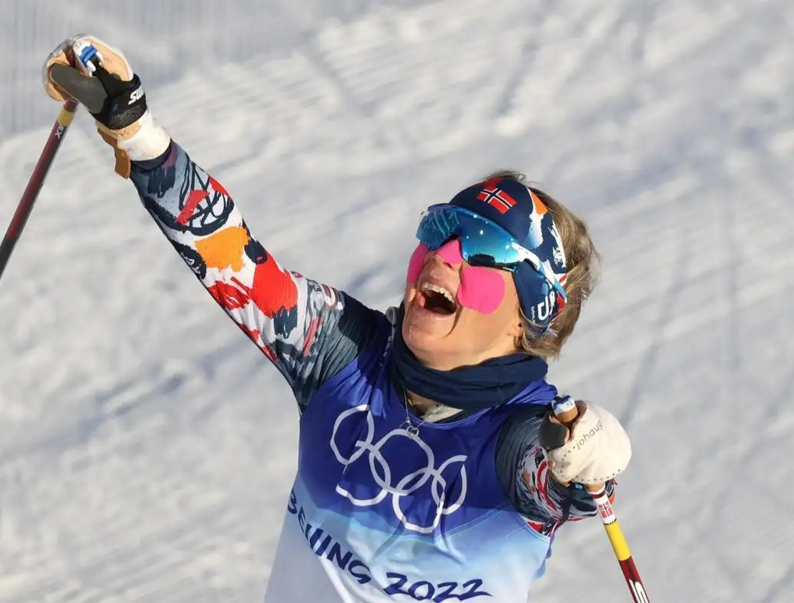
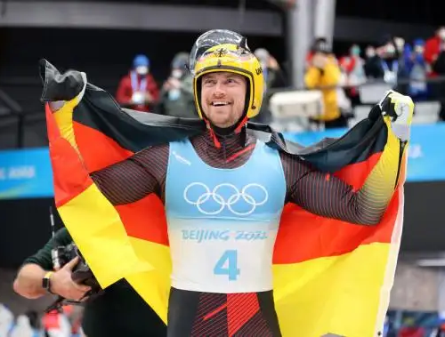
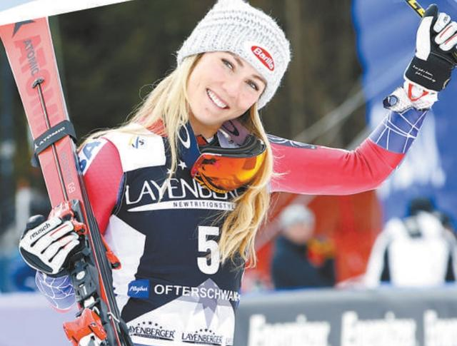
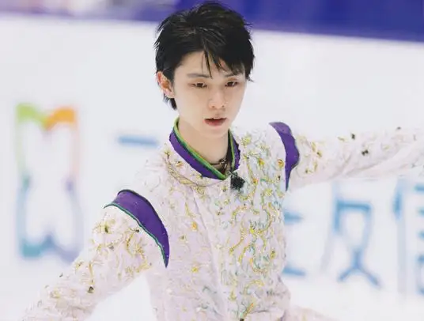
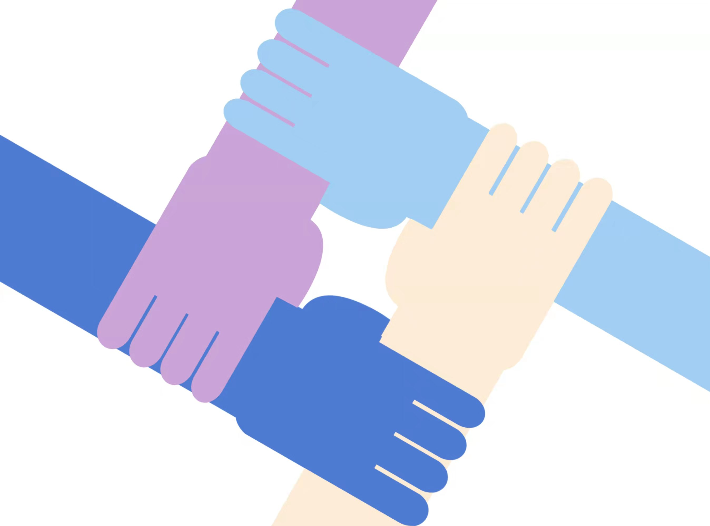
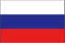
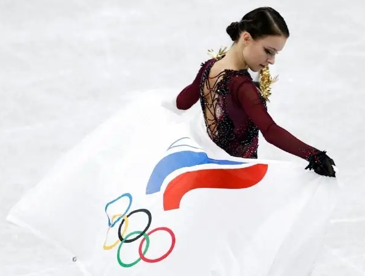
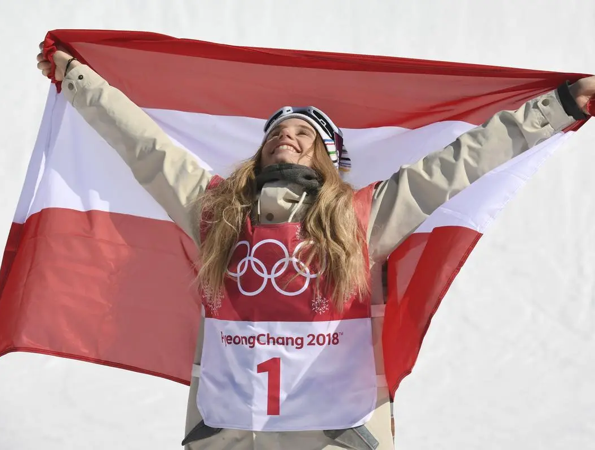
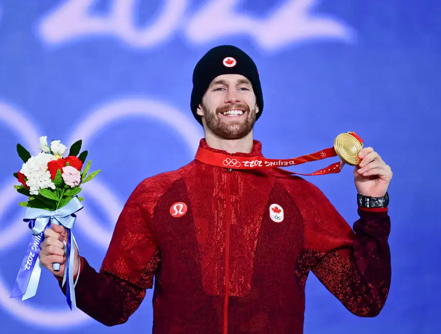
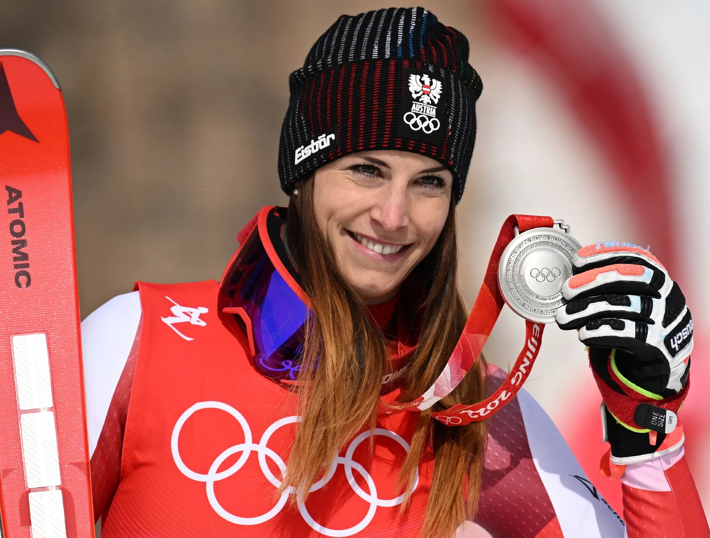

Home
特蕾丝·约海于格
挪威 越野滑雪
2022年北京冬奥会越野滑雪女子双追逐赛决赛冠军
在越野滑雪女子30公里集体出发（自由技术）决赛中，获得金牌

约翰内斯·路德维希
德国 无舵雪橇
2018年，获得平昌冬奥会无舵雪橇男子单人铜牌
2022年，获得北京冬奥会男子单人雪橇冠军，雪橇-雪橇团体接力比赛冠军

米凯拉·席弗琳
美国 高山滑雪
最年轻的障碍滑雪奥运冠军
2018年，获得平昌冬奥会高山滑雪女子大回转赛冠军
高山滑雪女子全能滑降决赛亚军

羽生结弦
日本 花样滑冰
2016年，世界花样滑冰大奖赛冠军
2017年，世界花样滑冰锦标赛冠军
2018年，在平昌冬奥会中获得花样滑冰男子单人滑冠军


安娜·谢尔巴科娃
俄罗斯 花样滑冰
2022年，获得北京冬奥会花样滑冰女子单人滑冠军
首位完成两次勾手四周跳、 勾手四周接后外点冰三周连跳的女子单人滑选手

安娜·加塞尔
奥地利 单板滑雪
2018年，平昌冬奥会单板滑雪大跳台项目冠军
2022年，在北京冬季奥运会单板滑雪女子大跳台决赛，获得金牌

马克斯·帕罗特
加拿大 单板滑雪
2015年，获得沸雪世界单板滑雪比赛北京鸟巢站的冠军
2022年，获得北京冬奥会单板滑雪男子坡面障碍技巧金牌

拉拉·古特-贝赫拉米
瑞士 高山滑雪
2022年，在北京冬奥会-高山滑雪-女子大回转第二轮比赛中，排名第一
在北京冬奥会高山滑雪女子超级大回转决赛，获得冠军
